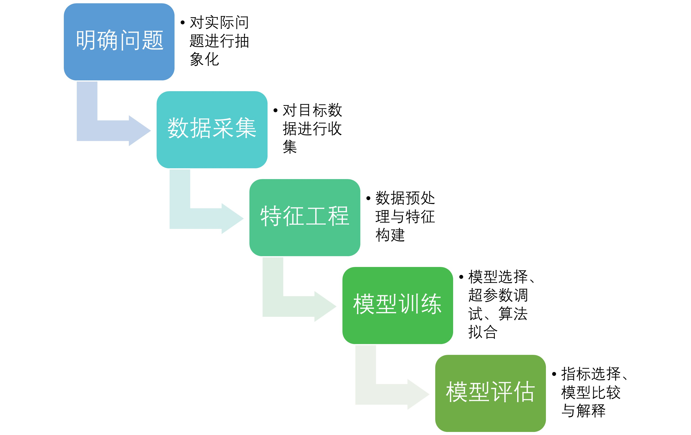

7 快速建模：高性能机器学习工具
在当今数据驱动的世界中，快速而高效地构建和部署机器学习模型变得至关重要。无论是初学者还是经验丰富的数据科学家，都需要掌握一些强大而高效的工具，以应对日益增长的数据量和复杂的分析需求。本章将介绍一些能够显著提升建模速度和性能的机器学习工具和框架，帮助读者在最短的时间内完成整个机器学习流程。通过这些高性能工具，你不仅可以加速模型开发，还能提升模型的预测能力和稳定性，使得数据科学工作更加高效。
7.1 机器学习基本流程
机器学习是一种通过算法和统计模型，使计算机系统从数据中自动学习和改进的技术。它包括监督学习、无监督学习、半监督学习和强化学习四种主要类型。机器学习广泛应用于图像识别、自然语言处理、医疗诊断和金融预测等领域。通过从大量数据中提取模式和特征，机器学习在解决复杂问题方面展现了强大的能力。
机器学习的基本步骤包括五个基本环节（见图Figure 7.1），分别是明确问题、数据采集、特征工程、模型训练和模型评估。下面我们对这些环节进行简要的介绍：
7.1.1 明确问题
在机器学习项目的开始阶段，明确问题是至关重要的。这一步涉及以下几个方面：
- 定义目标：明确要解决的问题和目标，例如预测房价、分类垃圾邮件、推荐商品等。
- 确定任务类型：根据问题的性质确定机器学习任务类型，例如分类、回归、聚类等。
- 理解业务需求：了解业务背景和需求，确保机器学习解决方案能够实际应用并带来价值。
- 设定评价标准：确定评估模型性能的标准和指标，例如准确率、均方误差、F1分数等。
7.1.2 数据采集
数据采集是机器学习的基础，数据的质量直接影响模型的性能。这一步包括：
- 数据来源：确定数据的来源，可以是数据库、文件系统、网络爬虫等。
- 数据收集：从各种来源收集所需的数据，确保数据量足够且具有代表性。
- 数据整合：将来自不同来源的数据整合在一起，形成一个统一的数据集。
- 数据存储：将数据存储在合适的存储系统中，例如数据库、数据仓库等，以便后续处理。
7.1.3 特征工程
特征工程是提高模型性能的关键步骤，包括对数据进行处理和转换，以提取有用的特征，这个过程包括：
- 数据清洗：处理缺失值、异常值和重复数据，确保数据的质量。
- 特征选择：选择对预测结果有显著影响的特征，减少特征数量以提高模型效率。
- 特征提取：从原始数据中提取新的特征，例如将日期拆分为年、月、日等。
- 特征转换：对特征进行转换，例如标准化、归一化、编码分类变量等，以适应模型输入要求。
7.1.4 模型训练
模型训练是机器学习的核心步骤，通过使用训练数据调整模型的参数，使其能够最好地拟合数据，相关的步骤包括：
- 选择算法：根据任务类型和数据特点选择合适的机器学习算法，例如线性回归、决策树、神经网络等。
- 模型构建：使用选定的算法构建初始模型。
- 训练模型：将训练数据输入模型，调整参数以最小化误差或最大化某种评估指标。
- 超参数调优：通过调整模型的超参数（例如学习率、正则化参数等）进一步优化模型性能。
7.1.5 模型评估
模型评估是检测模型性能的关键步骤，通过使用测试数据来评估模型的泛化能力，评估流程包括：
- 划分数据：将数据集划分为训练集和测试集，确保模型评估的独立性，评估阶段会使用测试集的数据。
- 选择评估指标：根据问题和任务类型选择合适的评估指标，例如分类任务中的准确率、精确率、召回率，回归任务中的均方误差、R方等。
- 评估模型：使用测试数据计算评估指标，评估模型在未见数据上的表现。
- 验证和调整：通过交叉验证等方法进一步验证模型的稳定性，必要时调整模型参数或特征工程。
通过这五个环节，机器学习项目能够系统地进行，从明确问题到最终评估模型，每一步都为构建一个高性能的机器学习模型奠定基础。
7.2 机器学习中可加速的环节
在机器学习过程中，加速某些环节可以显著提高整个机器学习的效率。本节我们会讨论我们能够从哪些环节进行优化，从而让机器学习的实现更加快捷。
首先，在数据采集和预处理阶段，通过自动化工具和脚本可以大幅减少手动操作的时间。此外，利用多线程或分布式计算框架（如Apache Spark）可以加快大规模数据集的处理和转换。此外，高效的数据存储格式（如Parquet、Feather）和数据库系统（如PostgreSQL、MongoDB）也能显著提高数据读写速度。
在特征工程阶段，批处理方法可以减少重复计算，自动特征工程工能够自动生成和选择特征，进一步提高效率。缓存特征工程过程中产生的中间结果，可以避免重复计算，从而节省时间。在模型训练过程中，使用多线程、多进程或分布式计算框架）可以并行训练模型，显著缩短训练时间。硬件加速器（如GPU或TPU）在加速深度学习模型训练方面也非常有效。此外，选择高效的优化算法能够加快模型的收敛速度，进而提高训练的整体速度。
超参数调优是另一个可以加速的环节。并行搜索方法（如并行网格搜索、随机搜索）允许同时评估多个超参数组合，显著节省时间。使用贝叶斯优化、遗传算法等智能优化方法，可以更高效地搜索最佳超参数组合。此外，超参数调优过程中使用早停法（early stopping），当模型性能不再显著提升时停止训练，这样可以节省大量计算资源。
在模型评估阶段，分布式计算框架可以并行计算评估指标，尤其是在处理大规模测试集时，这一方法非常有效。通过分层K折交叉验证或留一法交叉验证，可以在保证评估可靠性的同时减少计算负担。此外，预先计算一些评估指标，也能减少评估时间。
在模型部署和推理阶段，可以使用模型剪枝等技术来减少模型大小，提高推理速度，这能够显著提升部署效率。对于重复请求，缓存预测结果可以减少重复计算，进一步提高响应速度。
通过在这些环节中采用高效的技术和方法，能够显著加速机器学习项目的执行，提高整个流程的效率。上面描述的是我们能够加速的组分，在下一节中我们会采用R语言中mlr3工具包作为机器学习框架，描述如何在R环境高效地开展机器学习过程。
7.3 基于mlr3的高性能机器学习
在现代数据科学和机器学习的领域中，高效处理和分析大规模数据集是关键。为了实现这一目标，R语言中的mlr3框架以其强大的面向对象编程和模块化设计脱颖而出。本节将介绍如何利用mlr3构建高性能的机器学习模型，探索其核心功能和附加包如何协同工作，以支持并行计算和大数据处理。通过学习这一内容，您将了解如何使用mlr3优化机器学习任务的执行效率，提升模型的预测能力和可靠性，从而在实际应用中更好地应对复杂的数据分析挑战。
7.3.1 基本实现
下面我们举一个简单的例子，来看如何使用mlr3工具包来完成一个基本的机器学习任务。 首先，我们加载必须的包：
library(pacman)
p_load(mlr3verse)然后，我们来定义一个任务。这里我们提及的任务在mlr3的体系中是一个数据对象，它包含对机器学习任务进行定义的数据（即需要进行数据分析的原始数据）和元数据（比如谁是响应变量、谁是解释变量、是一个分类还是回归问题等）。在mlr3中，有一系列已经定义好的任务，可以直接进行取用。这里我们会取用“penguins”任务，这个任务试图通过企鹅的一系列特征来对企鹅的品种进行分类。任务定义代码如下：
task = tsk("penguins")
task<TaskClassif:penguins> (344 x 8): Palmer Penguins
* Target: species
* Properties: multiclass
* Features (7):
- int (3): body_mass, flipper_length, year
- dbl (2): bill_depth, bill_length
- fct (2): island, sex随后，我们需要使用partition函数对数据进行划分：
split = partition(task)
split$train
[1] 2 3 4 5 6 8 9 10 12 13 14 20 21 23 24 25 26 27
[19] 29 32 34 35 36 37 38 40 42 45 46 47 48 49 50 51 53 59
[37] 60 62 63 64 65 67 70 71 74 77 78 79 81 82 83 84 86 89
[55] 91 92 94 95 96 97 98 100 101 102 103 104 105 106 107 109 110 111
[73] 112 113 114 118 119 120 121 122 123 127 128 129 130 132 133 134 135 136
[91] 138 140 141 143 144 145 146 147 149 150 151 152 154 156 158 159 160 162
[109] 163 165 167 169 170 171 172 174 175 178 179 180 181 182 184 186 187 189
[127] 190 192 193 196 197 198 200 201 202 204 205 206 207 208 210 211 214 215
[145] 216 217 222 223 225 227 229 230 231 232 234 236 237 240 241 244 245 246
[163] 247 248 250 251 252 253 254 256 258 259 260 261 262 264 266 267 268 269
[181] 271 272 273 275 276 277 278 279 280 281 282 285 286 287 288 289 290 291
[199] 294 299 300 301 302 303 305 307 308 309 310 311 312 313 314 316 317 318
[217] 319 320 321 322 323 325 327 329 330 337 338 339 341 342 343
$test
[1] 1 7 11 15 16 17 18 19 22 28 30 31 33 39 41 43 44 52
[19] 54 55 56 57 58 61 66 68 69 72 73 75 76 80 85 87 88 90
[37] 93 99 108 115 116 117 124 125 126 131 137 139 142 148 153 155 157 161
[55] 164 166 168 173 176 177 183 185 188 191 194 195 199 203 209 212 213 218
[73] 219 220 221 224 226 228 233 235 238 239 242 243 249 255 257 263 265 270
[91] 274 283 284 292 293 295 296 297 298 304 306 315 324 326 328 331 332 333
[109] 334 335 336 340 344上面这一步操作，将数据分为了两份，一份是训练数据，一份是测试数据。split变量是一个列表，放着的是训练集和测试集所在的行号。下一步，我们将选择机器学习的模型，制定一个学习器。我们将选用决策树算法进行训练，让其进行分类，实现方法如下：
learner = lrn("classif.rpart")
learner<LearnerClassifRpart:classif.rpart>: Classification Tree
* Model: -
* Parameters: xval=0
* Packages: mlr3, rpart
* Predict Types: [response], prob
* Feature Types: logical, integer, numeric, factor, ordered
* Properties: importance, missings, multiclass, selected_features,
twoclass, weights如果想知道还有哪些学习器可以选择，可以这样操作：
mlr_learners<DictionaryLearner> with 49 stored values
Keys: classif.cv_glmnet, classif.debug, classif.featureless,
classif.glmnet, classif.kknn, classif.lda, classif.log_reg,
classif.multinom, classif.naive_bayes, classif.nnet, classif.qda,
classif.ranger, classif.rpart, classif.svm, classif.xgboost,
clust.agnes, clust.ap, clust.cmeans, clust.cobweb, clust.dbscan,
clust.dbscan_fpc, clust.diana, clust.em, clust.fanny,
clust.featureless, clust.ff, clust.hclust, clust.hdbscan,
clust.kkmeans, clust.kmeans, clust.MBatchKMeans, clust.mclust,
clust.meanshift, clust.optics, clust.pam, clust.SimpleKMeans,
clust.xmeans, regr.cv_glmnet, regr.debug, regr.featureless,
regr.glmnet, regr.kknn, regr.km, regr.lm, regr.nnet, regr.ranger,
regr.rpart, regr.svm, regr.xgboost上面给出的是mlr3内置的所有机器学习方法，其中classif作为前缀的是分类算法、clust作为前缀的是聚类算法、regr作为前缀的是回归算法。关于更多的算法参数列表，可以参考官方的文档（https://mlr-org.com/learners.html）。 在下一步，我们需要对模型训练，这里我们只需要对训练集进行学习，测试集留作测试。实现方法如下：
learner$train(task, row_ids = split$train)经过训练之后，获得的模型存在learner对象的model中：
learner$modeln= 231
node), split, n, loss, yval, (yprob)
* denotes terminal node
1) root 231 129 Adelie (0.441558442 0.199134199 0.359307359)
2) flipper_length< 207 144 44 Adelie (0.694444444 0.298611111 0.006944444)
4) bill_length< 43.35 100 3 Adelie (0.970000000 0.030000000 0.000000000) *
5) bill_length>=43.35 44 4 Chinstrap (0.068181818 0.909090909 0.022727273) *
3) flipper_length>=207 87 5 Gentoo (0.022988506 0.034482759 0.942528736) *利用这个学习器得到的模型，我们可以对测试集的数据进行预测。我们会调用学习器learner的predict方法，然后对之前task任务数据中行号为test的测试集进行预测：
prediction = learner$predict(task, row_ids = split$test)
prediction<PredictionClassif> for 113 observations:
row_ids truth response
1 Adelie Adelie
7 Adelie Adelie
11 Adelie Adelie
---
336 Chinstrap Chinstrap
340 Chinstrap Gentoo
344 Chinstrap Chinstrap最后，我们可以观察一些衡量模型好坏的参数来评估其表现，比如我们可以用准确率来进行衡量，实现方法如下：
prediction$score(msr("classif.acc"))classif.acc
0.9557522 上面这些步骤，就是我们利用mlr3框架对一个基本任务进行机器学习的全过程。有了这个基本的概念，我们来看mlr3是如何使用其框架给我们的机器学习过程提供便捷的工具，让整个任务更加高效。
7.3.2 特征选择
大数据中尝尝存在维度灾难的问题。维度灾难指的是在高维数据中，由于数据点变得稀疏和距离度量失效，导致传统的数据分析和机器学习方法变得无效的问题。它会导致模型过拟合、计算复杂度急剧上升和样本需求量增加。通过特征选择、特征提取和正则化等方法，可以有效缓解维度灾难，提高模型的性能和计算效率。本部分将会聚焦在特征选择这一主题，讨论在mlr3框架下如何对数据的特征进行筛选。常见的两种特征选择方法是筛选法和封装法，以下将分述之。
7.3.2.1 筛选法
筛选法是一种特征选择方法，通过独立评估每个特征的重要性，使用统计测试或评分指标（如信息增益、卡方检验或相关系数）来选择最具代表性的特征。筛选法的主要优点是计算效率高，可以快速处理大规模数据，并且不依赖于特定的机器学习算法，使其广泛适用于各种建模任务。
这里，我们以信息增益法为例，描述如何在mlr3的框架下实现筛选法。信息增益法通过评估每个特征对目标变量不确定性的减少程度来衡量特征的重要性。它计算出在引入某个特征后，我们对目标变量的预测是否变得更加明确，从而确定特征的重要性。最终，选择那些显著减少目标变量不确定性的特征用于模型训练。具体实现方法如下：
# 加载包
library(mlr3filters)
# 定义筛选器的类型，使用信息增益法
flt_gain = flt("information_gain")
# 使用企鹅分类的任务
tsk_pen = tsk("penguins")
# 对变量重要性的分值进行计算
flt_gain$calculate(tsk_pen)
# 对结果进行展示
as.data.table(flt_gain) feature score
<char> <num>
1: flipper_length 0.581167901
2: bill_length 0.544896584
3: bill_depth 0.538718879
4: island 0.520157171
5: body_mass 0.442879511
6: sex 0.007244168
7: year 0.000000000需要注意的是，有的筛选法只能处理没有缺失值的数据。在这样的情况下，需要先剔除掉缺失值，然后再对重要性分值进行计算。比如如果我们要选用JMIM（ Joint Mutual Information Maximization）方法，该方法通过最大化特征与目标变量之间的联合互信息来选择特征，确保每个新添加的特征与已选特征和目标变量的联合信息量最大。它在考虑特征之间的相互依赖性和与目标变量的关系时，选择最具代表性的特征。这样的方法有效地避免了选择冗余或相关性较低的特征，从而提高模型的性能。具体实现方法如下：
# 定义筛选器的类型，使用信息增益法
flt_jmim = flt("jmim")
# 使用企鹅分类的任务
tsk_pen = tsk("penguins")
# 剔除任务数据中包含缺失值的条目
tsk_pen$filter(tsk_pen$row_ids[complete.cases(tsk_pen$data())])
# 对变量重要性的分值进行计算
flt_jmim$calculate(tsk_pen)
# 对结果进行展示
as.data.table(flt_jmim) feature score
<char> <num>
1: flipper_length 1.0000000
2: bill_length 0.8333333
3: body_mass 0.6666667
4: island 0.5000000
5: bill_depth 0.3333333
6: year 0.1666667
7: sex 0.00000007.3.2.2 封装法
封装法是一种特征筛选方法，通过直接使用特定的机器学习模型来评估和选择特征子集。它使用搜索算法生成不同的特征子集，然后对每个子集训练和评估模型，使用性能指标来衡量模型表现。通过对每个特征子集的评估，封装法能够选择出在指定模型上表现最佳的特征组合。由于这种方法直接针对特定模型进行优化，通常能够获得优越的预测性能。然而，封装法的计算成本较高，尤其是在处理大规模数据集时，因此需要更多的计算资源和时间。
为了多快好省地获得最佳特征组合（或者至少是表现较为不错的特征组合），在实现封装法的时候需要遵循一定的搜索规则，从而提高搜索的效率。最常见的方法之一就是前向选择，其基本思想是从空特征集开始，逐步向前添加特征，直到达到某个预设的终止条件为止。在每一步中，选择能够带来最大性能提升的特征添加到当前特征集中，直至满足停止条件。这个过程通常会在指定的性能指标下，如准确率或其他评估指标下进行。其实现方法如下：
# 加载包
library(mlr3fselect)
# 定义任务
tsk_pen = tsk("penguins")
# 定义学习器，使用决策树
lrn_rpart = lrn("classif.rpart")
# 对其中的4个特征进行筛选
tsk_pen$select(c("bill_depth", "bill_length", "body_mass",
"flipper_length"))
# 进行特征筛选
instance = fselect(
fselector = fs("sequential"), # 筛选器设置
task = tsk_pen, # 声明任务
learner = lrn_rpart, # 学习器设置
resampling = rsmp("cv", folds = 3), # 使用3折交叉验证来做重采样
measure = msr("classif.acc") # 衡量标准是分类准确率
)
# 结果展示
instance$result_feature_set[1] "bill_depth" "bill_length" "flipper_length"我们没有给出展示的结果，因为在实际的操作中，如果重复次数不够多，那么不同迭代中出现的结果可能会不一致，这里仅仅展示实现方法。在特征筛选之后，我们可以使用筛选的特征来进行模型训练，方法如下：
# 定义任务
tsk_pen = tsk("penguins")
# 选择筛选出来的特征
tsk_pen$select(instance$result_feature_set)
# 决策树模型训练
lrn_rpart$train(tsk_pen)在实际操作中，还可以针对多个目标（比如同时优化特异度和敏感度）进行优化，同时还可以加入终止条件（比如只要迭代100次就停止），相关内容可以参考官方文档（https://mlr3book.mlr-org.com/chapters/chapter6/feature_selection.html）。
7.3.3 模型比较
很多时候，我们需要对同一个任务使用多个机器学习模型，并对模型进行比较；甚至有的时候，我们还需要看同一个模型在不同任务上的表现。在这种背景下，就需要构造任务组合，从而看在不同条件下创建的模型表现如何。下面我们展示在mlr3框架下如何对此进行实现：
# 选择2个分类任务
tasks = tsks(c("german_credit", "sonar"))
# 选择3个算法，预测类型为概率值
learners = lrns(c("classif.rpart", "classif.ranger",
"classif.featureless"), predict_type = "prob")
# 设置重采样方法为5折交叉验证
rsmp_cv5 = rsmp("cv", folds = 5)
# 创建训练网格
design = benchmark_grid(tasks, learners, rsmp_cv5)
# 对模型进行训练
bmr = benchmark(design)
# 观察模型效果
bmr$aggregate() [,.(task_id,learner_id,classif.ce)] task_id learner_id classif.ce
<char> <char> <num>
1: german_credit classif.rpart 0.2880000
2: german_credit classif.ranger 0.2370000
3: german_credit classif.featureless 0.3000000
4: sonar classif.rpart 0.3022067
5: sonar classif.ranger 0.1773519
6: sonar classif.featureless 0.4660859这里我们没有对结果进行展示，读者可以自行运行代码来观察，其中需要注意的细节包括：1、在使用算法的时候，“classif.rpart”使用的是决策树算法，“classif.ranger”使用的是随机森林算法，而“classif.featureless”则是一个基线模型，在分类问题上会对盲猜为多数类；2、这里默认观察模型的效果，会计算分类的错误率，错误率月低，代表模型表现越好，详见官方文档（https://mlr3.mlr-org.com/reference/mlr_measures_classif.ce.html）；3、在对bmr对象进行观察的时候，调用了aggregate方法，这个方法能够对不同迭代的表现结果进行汇总；4、mlr3框架使用了data.table作为底层，因此在观察模型效果的时候，我们选择列直接用了data.table中的方法。关于更多模型比较的内容，可以参考官方文档（https://mlr3book.mlr-org.com/chapters/chapter3/evaluation_and_benchmarking.html）。
7.3.4 参数调节
机器学习中的参数调节是优化机器学习模型性能的关键步骤。超参数是模型在训练过程中设置的参数，不会从数据中学习到，需手动设定。例如，决策树的深度、支持向量机的核函数类型或正则化参数等都是超参数。参数调节旨在找到这些超参数的最佳组合，以提高模型在新数据上的表现，常见的方法包括网格搜索、随机搜索和贝叶斯优化等。网格搜索通过遍历预定义参数组合来寻找最佳参数，但计算量大；随机搜索在预定义范围内随机选择参数组合，效率较高；贝叶斯优化利用先前评估结果构建代理模型，预测并选择最优参数组合。参数调节通常结合交叉验证进行，以确保模型的泛化能力。通过优化超参数，模型能在新数据上表现得更好，提高预测准确性和稳健性。
在mlr3中，如果要对一个学习器中的参数进行调节，可以在设置学习器的时候就进行声明，而我们日常没有特殊声明的时候都会直接使用函数的默认参数来进行设置。对于不同的机器学习算法，有不同的参数可以调节，我们可以去看学习器的参数集来观察有哪些参数可以调节，而且这些参数调节的范围是什么。比如我们想对随机森林方法的参数集进行观察，可以这样操作：
as.data.table(lrn("classif.ranger")$param_set)[,
.(id, class, lower, upper, nlevels)] id class lower upper nlevels
<char> <char> <num> <num> <num>
1: alpha ParamDbl -Inf Inf Inf
2: always.split.variables ParamUty NA NA Inf
3: class.weights ParamUty NA NA Inf
4: holdout ParamLgl NA NA 2
5: importance ParamFct NA NA 4
6: keep.inbag ParamLgl NA NA 2
7: max.depth ParamInt 0 Inf Inf
8: min.bucket ParamInt 1 Inf Inf
9: min.node.size ParamInt 1 Inf Inf
10: minprop ParamDbl -Inf Inf Inf
11: mtry ParamInt 1 Inf Inf
12: mtry.ratio ParamDbl 0 1 Inf
13: num.random.splits ParamInt 1 Inf Inf
14: node.stats ParamLgl NA NA 2
15: num.threads ParamInt 1 Inf Inf
16: num.trees ParamInt 1 Inf Inf
17: oob.error ParamLgl NA NA 2
18: regularization.factor ParamUty NA NA Inf
19: regularization.usedepth ParamLgl NA NA 2
20: replace ParamLgl NA NA 2
21: respect.unordered.factors ParamFct NA NA 3
22: sample.fraction ParamDbl 0 1 Inf
23: save.memory ParamLgl NA NA 2
24: scale.permutation.importance ParamLgl NA NA 2
25: se.method ParamFct NA NA 2
26: seed ParamInt -Inf Inf Inf
27: split.select.weights ParamUty NA NA Inf
28: splitrule ParamFct NA NA 3
29: verbose ParamLgl NA NA 2
30: write.forest ParamLgl NA NA 2
id class lower upper nlevels在展示结果中我们发现一共有30种参数可以进行调节，其中id存放的是参数的名称，class告诉我们参数的数据类型，而lower和upper分别界定的了参数的下限和上限，nlevels则告诉我们参数有几种可以选择（一般适用于离散型变量，如逻辑型和因子型）。这里，如果我们要对随机森林中树的数量进行调节，分别尝试100、200和400棵树，可以这样进行设置：
learner = lrn("classif.ranger", num.trees = to_tune(c(100, 200, 400)))如果只是想测试一个范围，比如100到400课树之间，则可以这样操作：
learner = lrn("classif.ranger", num.trees = to_tune(100,400))不妨看一下to_tune函数是如何对搜索空间进行设定的：
# 放入一个向量时，会进行遍历
to_tune(c(100, 200, 400))Tuning over:
p_fct(levels = c(`100` = 100, `200` = 200, `400` = 400))# 放入两个数字时，会生成一个范围
to_tune(100,400) Tuning over:
range [100, 400]要对函数进行更多的了解，可以通过键入?to_tune来参阅帮助文档进行学习。 当我们界定了搜索空间的范围时，很多时候我们没有办法进行地毯式的全面训练搜索，这时候就需要设定终止条件，比如训练一段时间后结束，或者进行100次迭代后结束等。在mlr3框架中，可以使用trm函数来定义一个终止条件。在知道上面我们提及的背景信息后，我们来尝试创建一个调参的对象：
# 定义任务
tsk_sonar = tsk("sonar")
# 定义学习器（随机森林模型），设定需要调节的参数
learner = lrn("classif.ranger", num.trees = to_tune(c(100, 200, 400)))
# 创建调参的环境
instance = ti(
task = tsk_sonar, # 设置任务
learner = learner, # 设置学习器
resampling = rsmp("cv", folds = 3), # 设置重采样方法：3折交叉验证
measures = msr("classif.ce"), # 设置评估指标：分类错误率
terminator = trm("none") # 设置终止调节：不采用任何终止条件，全部测试
)
# 设定调参方法为网格搜索
tuner = tnr("grid_search")
# 进行调参
tuner$optimize(instance) num.trees learner_param_vals x_domain classif.ce
<char> <list> <list> <num>
1: 400 <list[2]> <list[1]> 0.1971705# 显示调参结果
instance$result num.trees learner_param_vals x_domain classif.ce
<char> <list> <list> <num>
1: 400 <list[2]> <list[1]> 0.1971705此外，mlr3框架中实现同样的方法，还有其他更加明晰的实现方法：
tuner = tnr("grid_search")
learner = lrn("classif.ranger", num.trees = to_tune(c(100, 200, 400)))
rsmp_cv3 = rsmp("cv", folds = 3)
msr_ce = msr("classif.ce")
terminator = trm("none")
instance = tune(
tuner = tuner,
task = tsk_sonar,
learner = learner,
resampling = rsmp_cv3,
measures = msr_ce,
terminator = terminator
)
instance$result num.trees learner_param_vals x_domain classif.ce
<char> <list> <list> <num>
1: 400 <list[2]> <list[1]> 0.1731539最后返回的结果就是本次测试中获得的最佳参数（这里没有给出，请读者自行运行尝试）。关于如何在mlr3框架中灵活地对各种参数组合进行调节，可以参考官方文档（https://mlr3book.mlr-org.com/chapters/chapter4/hyperparameter_optimization.html）。
7.3.5 综合实践
在本节中，将会给出一个综合的例子，描述如何在mlr3框架中进行高效的机器学习。首先我们将加载包：
library(mlr3verse)随后我们会挑选2个内置任务，这两个任务的共同点是它们都属于二分类问题：
tasks = tsks(c("german_credit", "sonar"))而后，我们来定义学习器，并为需要调整的参数进行设置：
# 定义随机森林学习器
glrn_rf_tuned = as_learner(ppl("robustify") %>>% auto_tuner(
tnr("grid_search", resolution = 5),
lrn("classif.ranger", num.trees = to_tune(200, 500)),
rsmp("holdout")
))
# 为学习器进行命名，命名为RF
glrn_rf_tuned$id = "RF"
# 定义集成学习的学习器
glrn_stack = as_learner(ppl("robustify") %>>% ppl("stacking",
lrns(c("classif.rpart", "classif.kknn")),
lrn("classif.log_reg")
))
# 为学习器进行命名，命名为Stack
glrn_stack$id = "Stack"上面的代码虽然很短，但是其实细节非常多：1、%>>%是mlr3框架中独特的管道操作符，用于将多个数据处理和建模步骤组合在一起，以创建一个完整的机器学习工作流（详见https://mlr3book.mlr-org.com/chapters/chapter7/sequential_pipelines.html）；2、在定义网格搜索的时候，声明resolution参数为5，即分辨率为5，这样会把搜索空间分为5等分，然后在在空间内进行尝试，这个例子中是对随机森林下限为200课树、上限为500棵树这个空间进行划分（详见https://mlr3book.mlr-org.com/chapters/chapter4/hyperparameter_optimization.html）；3、在定义名为“Stack”的学习器，使用了集成学习方法，基本思想是使用决策树和KNN算法先训练，然后结合两者的结果再拟合一个逻辑回归对响应变量进行预测。这个方法超越了本书介绍的范畴，感兴趣的读者可以参考官方文档（https://mlr3book.mlr-org.com/chapters/chapter8/non-sequential_pipelines_and_tuning.html）中的相关部分。 定义了两个学习器之后，我们要把两者合并到一起：
learners = c(glrn_rf_tuned, glrn_stack)然后，我们要对这些任务-模型组合进行训练，观察其表现。这里统一使用3折交叉验证进行重采样，实现代码如下：
bmr = benchmark(benchmark_grid(tasks, learners, rsmp("cv", folds = 3)))最后通过对所得结果的准确率进行计算并汇总，来对不同任务下不同算法效果的对比，实现代码如下：
bmr$aggregate(msr("classif.acc"))
# nr task_id learner_id resampling_id iters classif.acc
# <int> <char> <char> <char> <int> <num>
# 1: 1 german_credit RF cv 3 0.7550245
# 2: 2 german_credit Stack cv 3 0.7390235
# 3: 3 sonar RF cv 3 0.8221532
# 4: 4 sonar Stack cv 3 0.7213941
# Hidden columns: resample_result这里我们没有给出结果，请读者自行尝试。我们可以看到，mlr3框架可以让我们用短短的数行代码来实现非常复杂的机器学习操作，大大提高了我们完成机器学习任务的效率。
7.4 小结
本章针对机器学习问题，描述了如果在R语言中应用mlr3框架来高效完成机器学习的各个环节。事实上，针对大数据问题，mlr3框架还提供了很多高级工具，如并行化、异常处理等（参见https://mlr3book.mlr-org.com/chapters/chapter10/advanced_technical_aspects_of_mlr3.html）。由于本部分只是对大数据机器学习进行简单介绍，因此没有对各方面的细节进行一一解释，感兴趣的读者可以尝试系统学习mlr3框架的图书，电子版见https://mlr3book.mlr-org.com/。希望读者在学习完本章后，能够熟悉机器学习的各个环节，并利用相关工具对每个环节进行加速，结合优秀的算法和实现工具，减轻建模者和机器可能承受的负担，进而提高机器学习的效率。